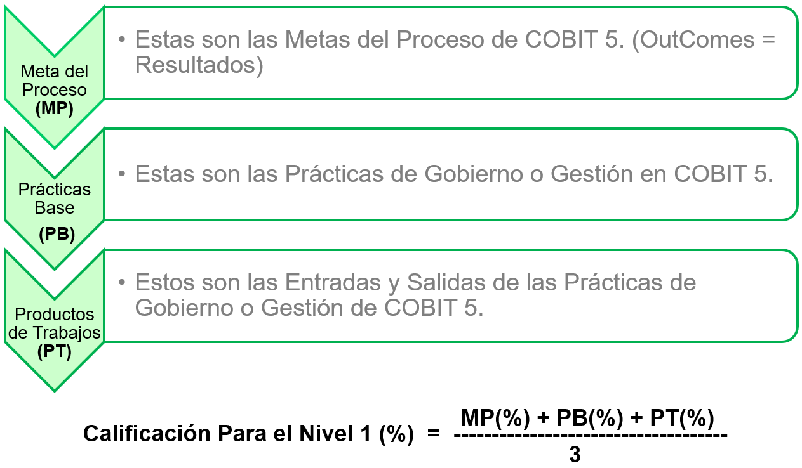
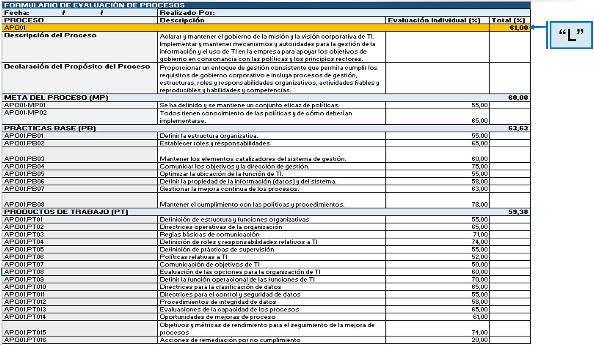
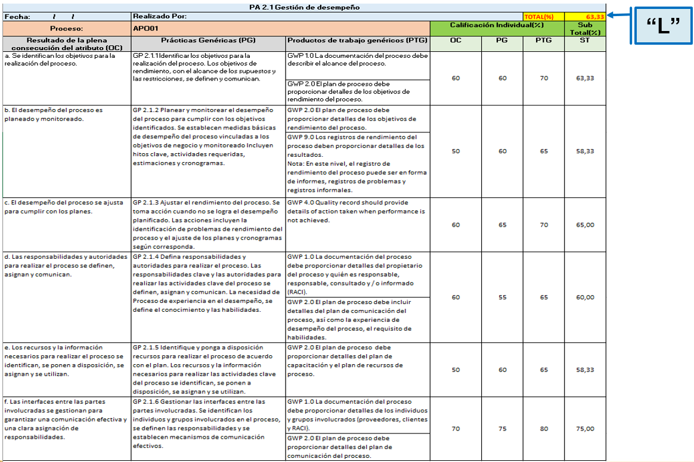
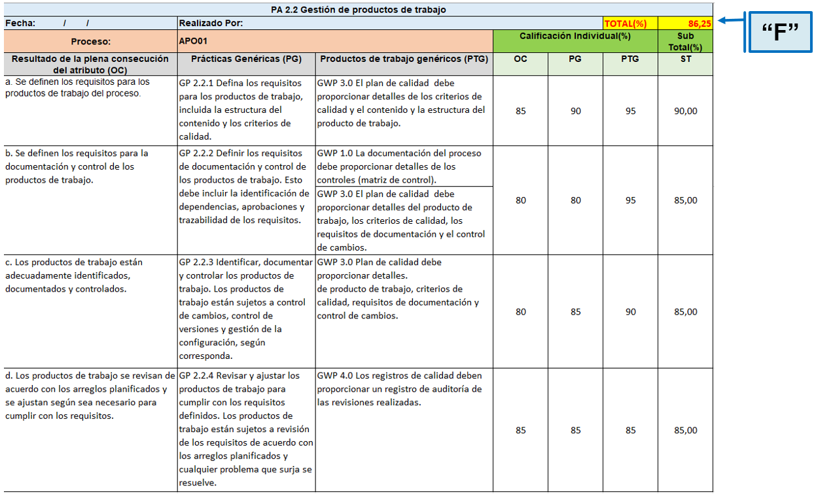

EJEMPLO: PROCESO "APO01"
En éste ejemplo se va a proceder a realizar la evaluación de la capacidad del proceso "APO01" para los niveles 1 y 2.
En éste ejemplo se va a proceder a realizar la evaluación de la capacidad del proceso "APO01" para los niveles 1 y 2.
Evaluar si el proceso alcanza su propósito (en otras palabras, alcanza el nivel de capacidad 1):
1. Revisar los Resultados o Metas del Proceso tal y como se describen para cada proceso en sus descripciones detalladas, y usando la escala de la ISO/IEC 15504 para asignar un rango para el grado en el que cada objetivo es alcanzado.
2. Además, las Prácticas del Proceso (de gobierno o de gestión) pueden ser evaluadas usando la misma escala de puntuación, expresando el punto hasta el que se aplican las prácticas de base.
3. Para afinar la evaluación más allá, los Productos del Trabajo (Salidas) pueden ser considerados para determinar el grado al que un atributo de evaluación específico ha sido alcanzado.



Evaluar si el proceso alcanza su propósito y es gestionado (en otras palabras, alcanza el nivel de capacidad 2):
1. Revisar los Resultados o el Logro alcanzado de los Atributos de cada Nivel de Capacidad correspondiente a un proceso en específico, usando la escala de la ISO/IEC 15504 para asignar una calificación para el grado en el que cada objetivo del atributo es alcanzado.
2. Además, las Prácticas Genéricas de cada atributo pueden ser evaluadas usando la misma escala de puntuación.
3. Para afinar la evaluación más allá, los Productos del Trabajo Genéricos (Salidas) pueden ser considerados para determinar el grado al que un atributo de evaluación específico ha sido alcanzado.


- Como el proceso "APO01" en su evaluación de capacidad para el nivel 1, su atributo 1.1 tiene una calificación de "L", se concluye que el proceso si está en "Nivel 1"
- Como el proceso "APO01" en su evaluación de capacidad para el nivel 2, sus atributos 2.1 y 2.2 tienen una calificación de "L" y "F" respectivamente y como ya se sabe que el atributo 1.1 tiene una calificación de "L", aplicando el sitema de evaluación propuesto por PAM de COBIT 5, se concluye que el proceso "APO01" apenas pudo alcanzar el "Nivel 1" de calificación.
Obra publicada con Licencia Creative Commons Reconocimiento Compartir igual 4.0